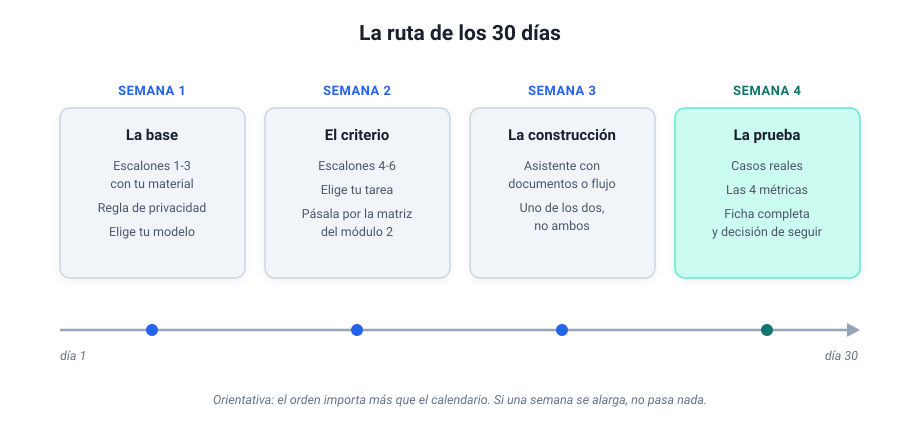

Módulo 7 - Tu caso de uso¶
Diseñar, documentar y ejecutar tu propio proyecto¶
Este es el módulo de cierre, y es puro trabajo de mesa: una plantilla para que diseñes tu propio caso de uso de principio a fin, con toda la información necesaria para ponerlo en marcha tú mismo o entregarlo a un equipo técnico, y una ruta de 30 días para pasar del papel a la práctica.
1. Plantilla completa de caso de uso¶
Copia esta plantilla y rellénala con tu proyecto. No hace falta que esté perfecto al primer intento: es un documento vivo que irás refinando.
Ficha de caso de uso¶
Nombre del proyecto: (ej: Resumen automático de correos de clientes)
Propósito: ¿Qué problema resuelve? ¿Qué tarea automatiza o mejora?
Destinatario: ¿Quién va a usar el resultado? ¿Dirección? ¿Equipo comercial? ¿Operaciones?
Patrón de IA: (elige uno o varios) - Resumir - Clasificar - Extraer - Conversar
Entradas: - ¿De dónde vienen los datos? (correo, CRM, SharePoint, formulario…) - ¿Qué formato tienen? (texto libre, PDF, tabla…) - ¿Con qué frecuencia llegan? (continuo, diario, semanal…)
Procesamiento IA: - ¿Qué modelo usarás? (GPT-5.5, Claude Sonnet 4.6, modelo local…) - ¿Cuál es el prompt? (escríbelo completo, con rol, formato, idioma y comportamiento ante información faltante) - ¿Necesita acceso a documentos? (si es así, ¿cuáles?)
Salidas: - ¿Dónde se entrega el resultado? (Slack, email, hoja de cálculo, CRM…) - ¿En qué formato? (lista, párrafo, JSON, tabla…)
Restricciones: - ¿Qué datos NO se pueden compartir con la IA? - ¿Hay requisitos de idioma o tono? - ¿Quién puede acceder al resultado?
Responsable funcional: (persona que revisa que siga funcionando)
Herramientas necesarias: - Plataforma de automatización: (n8n / Make / Zapier / ninguna) - Modelo de IA: (proveedor y plan) - Otros servicios: (Google Sheets, Slack, CRM…)
Credenciales necesarias: - API key del modelo de IA - Conexión al servicio de entrada (email, CRM…) - Conexión al servicio de salida (Slack, Sheets…) - Otras: ___
Coste mensual estimado: - Suscripción de chat o de plataforma: (€/mes; la tabla del módulo 1 y el orden de coste del módulo 2) - Uso por API si el flujo corre solo: (céntimos a pocos euros/mes en casos personales) - Total estimado: ___ €/mes, frente a un ahorro estimado de ___ horas/mes
Plan de hábito: (lo que separa la herramienta viva del experimento olvidado) - ¿Cuándo corre o cuándo se usa? (cada mañana, cada lunes, al llegar un correo…) - ¿Quién revisa el resultado y con qué frecuencia? - ¿Cuánto mantenimiento asumes? (la referencia del módulo 6: minutos a la semana y alguna tarde al año) - ¿Cómo se avisa si deja de funcionar?
Métricas de éxito: 1. Uso: (ejecuciones esperadas por semana) 2. Ahorro estimado: (horas/semana o euros/mes) 3. Calidad: (cómo medirás si el resultado es útil) 4. Errores aceptables: (qué tasa de fallo es tolerable)
2. Ficha de documentación para IT¶
Si necesitas que el equipo técnico formalice tu prototipo, entrégales esta ficha junto con la plantilla anterior:
| Campo | Contenido |
|---|---|
| Objetivo de negocio | (qué problema resuelve, en una frase) |
| Flujo actual | (dónde se ejecuta hoy: n8n, Make, asistente manual…) |
| Dolor actual | (qué no funciona: credenciales personales, límites de ejecución…) |
| Necesidad técnica | (qué se necesita: endpoint, despliegue, base de datos, monitorización…) |
| Entradas esperadas | (formato y origen de los datos) |
| Salidas esperadas | (formato y destino del resultado) |
| Restricciones | (privacidad, idioma, normativa) |
| Prompt | (versión exacta del prompt que se está usando) |
| Modelo | (proveedor, nombre del modelo, parámetros relevantes) |
Con esta información, el equipo técnico no tiene que adivinar nada.
3. La ruta de los 30 días¶
La plantilla dice qué construir; esta ruta dice cuándo. Es el recorrido del curso convertido en calendario, para quien prefiere avanzar con hitos a la vista. Cada semana termina con algo comprobable, y la regla de oro es no saltarse el orden: las dos primeras semanas no usan más herramienta que el chat, y son las que hacen fáciles las dos últimas.

- Semana 1, la base. Los tres ejercicios de "Antes de empezar" sobre material tuyo, la regla de privacidad en tres preguntas y la elección de modelo. Hito: una tarea real resuelta con una instrucción estructurada e iterada.
- Semana 2, el criterio. Los escalones 4-6 (encadenar, adjuntar, formatos) y la elección de tu tarea candidata, pasada por la matriz del módulo 2. Hito: la tarea elegida, dibujada en tres cajas y con veredicto de "merece la pena".
- Semana 3, la construcción. El asistente con documentos del módulo 3 o el primer flujo del módulo 2, uno de los dos; ambos a la vez es la receta clásica del abandono. Hito: funciona una vez de principio a fin.
- Semana 4, la prueba. Casos reales, las cuatro métricas del módulo 6, la evaluación de cinco preguntas si es un asistente, y la plantilla de este módulo rellenada. Hito: la decisión informada de seguir, ajustar o parar, con datos.
4. Qué viene después¶
La IA generativa evoluciona rápidamente. Estas son las tendencias que vale la pena seguir:
Modelos locales cada vez más capaces¶
Modelos como Llama 4, Gemma 4, Mistral y Qwen 3 ya compiten con los modelos comerciales en muchas tareas, y los más ligeros corren en un portátil reciente. Ejecutarlos en tu máquina da privacidad total y elimina costes de API. La brecha de calidad se reduce cada trimestre.
Multimodalidad madura¶
Los modelos ya procesan texto, imágenes, audio y documentos escaneados. La transcripción de reuniones, el análisis de fotos de obra y la extracción de datos de facturas escaneadas son posibilidades reales hoy.
Agentes autónomos¶
Sistemas que ejecutan acciones, no solo responden preguntas: reservar una reunión, actualizar un CRM, generar un informe y enviarlo. Ya son una realidad cotidiana, aunque conviene vigilarlos de cerca: cuanta más autonomía les das, más importa el criterio con que defines lo que pueden y no pueden hacer.
MCP como estándar de hecho¶
El Model Context Protocol ya es la forma estándar de conectar modelos con herramientas, y lo soportan los principales proveedores. Elegir un asistente de IA empieza a parecerse a elegir un navegador: todos acceden a los mismos servicios, y la diferencia está en cómo los usas.
Voz como interfaz¶
La interacción por voz con modelos de IA ya funciona razonablemente. "Oye asistente, resúmeme los correos del proyecto Madrid" será una forma habitual de trabajar.
5. La caja de herramientas del profesional en 2026¶
Un resumen de herramientas y cuándo usar cada una:
| Necesidad | Herramienta | Cuándo |
|---|---|---|
| Chatear con IA | ChatGPT, Claude, Gemini | Consultas rápidas, lluvia de ideas, redacción |
| Automatizar sin código | n8n, Make, Zapier | Flujos repetitivos entrada → IA → salida |
| Asistente con documentos | GPTs, Claude Projects, Gemini Gems | Consultas sobre procedimientos, FAQ internas |
| Construir herramientas | Claude Code, Cursor | Prototipos, scripts, sistemas personalizados |
| Conectar herramientas con IA | MCP | Integración estándar con correo, documentos, bases de datos |
| IA privada | Ollama, LM Studio | Datos sensibles, sin costes de API |
| Transcripción | Whisper, servicios integrados | Reuniones, notas de voz |
| Buscar en documentos | RAG (propio o vía plataforma) | Cuando tienes más de 10 documentos relevantes |
6. Lleva un registro de tu propio avance¶
Una última idea, quizá la más fácil de pasar por alto. Lleva un registro de lo que vas construyendo y aprendiendo: qué probaste, qué funcionó, qué te atascó. No hace falta nada sofisticado, un documento basta.
El salto de "uso ChatGPT" a "tengo un sistema que trabaja conmigo" se ve cuando miras atrás, no mientras ocurre. Y solo puedes mirar atrás si lo has registrado. Yo no me di cuenta de cuánto había avanzado hasta que un día leí mis propias notas de unos meses antes y no reconocí al que las había escrito. Tu propia trayectoria es un activo: trátala como tal.
7. Cierre del curso¶
Tres competencias que ya tienes:
-
Autonomía digital: sabes usar la IA para resolver problemas reales de tu entorno laboral, elegir las herramientas adecuadas y proteger la información.
-
Criterio técnico: entiendes qué te ofrecen los proveedores, cómo evaluar si lo necesitas y cómo hablar con los equipos que lo implantan.
-
Capacidad de transferencia: tienes un caso de uso documentado, listo para compartir, escalar o entregar a IT.
Cierre
La IA amplifica tu experiencia profesional. Lo que has aprendido en estos siete módulos es una forma nueva de trabajar que premia a quienes combinan criterio profesional con curiosidad técnica. Y esa combinación la tienes tú. El resto es ponerse: elige una tarea que te duela, móntala y mejórala. Así empezó todo lo que hoy te he contado.
8. Cuéntame cómo te ha ido¶
Si has llegado hasta aquí, tu experiencia es el dato que más me interesa: el curso mejora con lo que cuentan quienes lo han recorrido, y cada edición recoge esos arreglos en la página de novedades. Son tres preguntas y una respuesta de cinco minutos por correo:
- ¿Qué montaste (o intentaste montar)?
- ¿Dónde te atascaste?
- ¿Qué te faltó en el curso?
Escríbeme la respuesta%20Qu%C3%A9%20mont%C3%A9%20(o%20intent%C3%A9%20montar)%3A%0A%0A2)%20D%C3%B3nde%20me%20atasqu%C3%A9%3A%0A%0A3)%20Qu%C3%A9%20me%20falt%C3%B3%3A%0A%0A) (el enlace lleva las preguntas ya puestas). Leo todo lo que llega.
Para profundizar
- The GenAI Divide: State of AI in Business 2025: MIT NANDA: Por qué el 95% de las organizaciones no obtienen ROI medible de GenAI.
- AI Index Report: Stanford HAI: Datos anuales del panorama global de IA.
- What We Learned from a Year of Building with LLMs: O'Reilly: Lecciones de seis profesionales sobre lo que funciona y lo que no en producción.
- Ethan Mollick: One Useful Thing: El blog más accesible y actualizado sobre el impacto real de la IA en el trabajo.